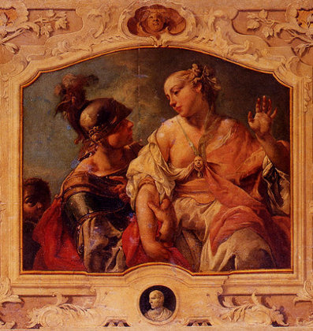

On yıl süren Troya savaşının dokuz yılında, Akhalılar ve Troyalılar birbirlerine üstünlük sağlayamadılar. Savaşta Hera, Athena ve Poseidon Akhalıları desteklerken, Afrodit, Ares Apollon Troyalıları destekledi. Birçok tanrı ve tanrıçanın savaşta taraf olmasına rağmen bu savaş esas olarak Afrodit ile Poseidon arasındaydı. Bunun en önemli nedeni Troya savaşının bir deniz çıkartması olmasıdır. Zira Yunanistan’da deniz tanrısı olarak Poesidon tanınırken, Troyalılar Afrodit’yi denizlere hükmeden tanrıça olarak benimsemişlerdi. Bu nedenle mitolojik anlatımının ötesinde Küçük Asya’nın yeraltı ve yerüstü zenginliklerine sahip olmak için yapılan Troya savaşı mitolojik bakımdan da deniz tanrısı ile tanrıçasının bir egemenlik savaşı gibi görünmektedir.
Savaşın ilk dokuz yılının iki taraf arasında gidip gelmesi ve hiçbir tarafın birbirine üstünlük sağlayamaması Olimpos tanrısı Zeus’un savaş karşısında takındığı tutum ile ilişkilidir. Zeus, Troyalılara her zaman sempati beslemiş ama asıl olarak savaşta nihai safını Akhalıların yanında belirlemiştir. Bunun da oldukça basit bir nedeni vardır; zira Akha ordusu bir Yunanistan ordusudur ve Zeus da her şeyden önce Yunanlı bir tanrıdır.
Afrodit ise kültünü küçük Asya’da yaymaya çalışan bir tanrıça idi. Yunanistan’da sadece güzellik ve aşk tanrıçası olarak kabul edilirken, Troya da ayrıca deniz tanrıçası olarak da itibar görüyordu. Öte yandan Athena ile Hera ile giriştiği güzellik yarışmasında Paris’in onu birinci seçmesi ve bu yüzden Hera ile Athena’nın kendisine düşman kesilmeleri Afrodit’nin Troyalıları desteklemesine yol açtı.
Afrodit bu savaşta Troyalılara öylesine yürekten bir destek vermiştir ki, bu uğurda yaralanmayı bile göze almıştır. Öte yandan Afrodit savaşta ölen Troyalılara karşı sevgi ve şefkatini hiçbir zaman esirgememiştir. Bunun en güzel örneği Hektor’un cesedinin başında bekleyerek onu köpeklere yem etmemesidir.
Troya savaşı çok şiddetli çatışmalara sahne oldu. Bazen Troyalılar üstünlüğü ele geçiriyor, bazen de Akhalar Troyalıları surların içine kadar geriletiyor, çevredeki yerleşim yerlerini talan ediyor, kaçırdıkları kızları çadırlarına kapatarak rehin alıyorlardı. Bu taarruzlardan birinde Akha ordularının başkumandanı Agamemnon, Apollon’un rahibi Khryseis’in kızını esir alarak çadırında rehin tutmaya başladı. Kızının çadırda rehin tutulmasını kabullenemeyen rahip, değerli kurtulmalıklar eşliğinde Agamemnon’un yanına gelerek kızını bırakması için ona yalvardı. Ne var ki Akhalıların komutanı Agamemnon kızı serbest bırakmayı reddettiği gibi rahibe çok kötü davrandı. Agamemnon’un bu sert tavrı karşısında umutsuzluğa kapılan rahip, Apollon’a yalvararak, Akha orduların üzerine hastalık göndermesini istedi. Rahibin bu bedduasını kabul eden Apollon, Akhalıların üzerine ateşli oklarıyla saldırarak çok sayıda Akhalı savaşçıyı vurdu. Oklardan saçılan zehir sonucunda birçok savaşçı hastalandı ve öldü.
Apollon’un bu gazabı neticesinde zor durumda kalan Akhalılar, bu çaresiz duruma bir çözüm yolu aramaya başladılar. Akhalıların kahramanı Akhilleus, bütün kumandanları bir araya toplayarak Apollon’un öfkesini yatıştıracak bir çare bulmaları gerektiğini, aksi durumda savaşı kaybedeceklerini, eğer bu umutsuz duruma bir çözüm bulamazlarsa daha fazla kayıp vermenin anlamsız olduğunu, şu halde evlerine dönmelerinin daha uygun olacağını söyledi.
Daha sonra söz alan kahin Kalkhas, Agamemnon’un rahibe saygısızlık yaptığı için bütün bunların başa geldiğini, eğer hala rahibin kızı serbest bırakılmazsa bundan sonra Apollon’un, Akha ordusunu üzerine daha büyük felaketler göndereceğini belirtti. Bunun üzerine başkomutan Agamemnon istemeye istemeye kızı rahibe geri vermeyi kabul etmek zorunda kaldı. Fakat bu kez de buna karşılık Akhillius’un karısı Briseis’i almayı şart koştu. Akhillius karısına göz diken Agamemnon’a karşı büyük bir hınç duysa da Akha ordusunun yenilmesine ve tanrının lanetine uğramasına gönlü razı olmadığından, başkomutanın bu zalimane istediğini içi kan ağlayarak kabul etmek zorunda kaldı. Fakat bunun bedelini de Agamemnon’a çok kötü ödettireceğine dair söz verdi.
Agamemnon’un, Akhillius’un karısına göz dikmesi, deniz perisi ve Akhillius’un annesi Thetis’i çok sinirlendirdi. Thetis oğlunun yanına giderek savaştan çekilmesini söyledi. Sonra da Olimpos’a giderek Akhillius’u Troyalıların tarafına geçirmesi için Zeus’a yalvardı. Ne var ki Zeus, onun bu isteğini kabul etmedi.
Karısı Briseis’i Agamemnon’a kaptıran Akhillieus, bunu hazmedemeyerek savaştan çekildi. Hiçbir toplantıya katılmıyor, cepheye gitmiyor ve gün boyu sinirli sinirli gemilerinin başında oturuyordu.
Akhillius’un savaştan çekilmesinden sonra Akha ordusu kahramanca savaşsa da Troyalılar kısa süre içinde üstünlüğü ele geçirdiler. Akha ordusunun başkumandanı Agamemnon, büyük bir umutsuzluğa kapılıp, bu savaşı kazanmanın mümkün olmadığını düşünerek savaştan çekilmeye ve Yunanistan’a dönmeye karar verdi. Ancak Pylos kralı yaşlı ve bilge Nestor, bu biçimde cepheyi terk etmenin bir ordu açısından onurlu bir davranış olmadığını, bu şekilde savaşı bitirmeleri halinde Yunanistan’ın itibarının yerle bir edeceğini söyleyerek, savaştan çekilmek yerine Akhillius’u ikna edip savaşa onunla birlikte devam etmeyi önerdi. Artık iyice çaresiz kalan Agamemnon, Pylos kralının bu önerisini kabul etmekten başka bir yol göremeyerek, Akhillius’un karısı Briseis’i ve değerli hediyelerini geri iade edeceğini söyleyerek, Odysseus’u elçi olarak Akhillius’a gönderdi. Ancak Akhillius, başkomutanın karısına göz dikmesine öyle içerlemiş ve öyle öfkelenmişti ki, Odysseus ne kadar dil döktüyse de Akhillius’u ikna edemedi.

Paris ve Helene.
Bu sırada cephede de durum Akhalılar açısından iyice kötüye gidiyordu. Ertesi gün, yaşanan savaşta Akhalılar iyice geriletilerek gemilerin önlerine kadar sürüldüler. Troyalılar, Akha donanmasına o kadar çok yaklaşmışlardı ki, gemileri ateşe vermeleri işten bile değildi. Bu çaresiz manzara karşısında bir şeyler yapılması gerektiğini düşünen Akhillius’un en yakın arkadaşı ve Opus kralı Patroklos, Akhillius’un otağına giderek adeta ona yalvardı ve tekrar savaşa dönmesini istedi. Ne var ki, Akhillius en yakın arkadaşının bu isteğini de geri çevirdi. Bunun üzerine Patroklos hiç değilse, kendisine ait olan yenilmez zırhı vermesini istedi. Arkadaşının yakarmaları karşısında yüreği yumuşayan Akhillius, Agamemnon tarafından aşağılandığı için savaşmayı kabul etmese de bu en yakın arkadaşına, demir ve maden tanrısı Hephaistos’un yapmış olduğu yenilmez zırhı ve savaşçılarının bir bölümünü vermeye razı oldu. Hemen Akhillius’un zırhını giyip, savaşçılarını da alarak savaş meydanına koşan Patroklos, o kadar yiğitçe savaşıyordu ki, Troyalı savaşçıları adeta bir tırpan gibi biçiyordu. Akhillius’un zırhı içinde kendisini tanıyamayan Troyalılar önce onu Akhillius zannederek paniklediler. Zira Akhillius’un savaşa yeniden katılması bütün dengeleri alt üst edebilirdi. Akhillius’un zırhını giyen Patrokles, o kadar çok Trolyalı öldürmüştü ki, neredeyse tek başına Troya’yı ele geçirecekti. Bunun üzerine tanrı Apollon hemen surların tepesinde belirerek surlara tırmanmaya çalışan Paktroklos’un kafasına kalkanı ile üç kez vurdu. Sonra bir sis bulutu halinde Patroklos’un peşinden giden Apollon, ona arkadan yaklaşarak omuzlarının ortasına ölümcül bir darbe indirdi. Bu darbenin etkisi ile gözleri adeta yuvalarından fırlayan Patroklos yere yuvarlandı; miğferi fırlayıp, elindeki mızrak paramparça oldu. Ardından Panthoos’un oğlu Euphorbos’un saldırısıyla yaralanan Patroklos, Hektor’un darbesi ile son nefesini verdi. Hektor, Patroklos’u öldürdükten sonra kargısını alıp, zırhını soydu ve kendisi giyindi. Zırhı giyince Akhillius’un gücünü kuşanan Hektor, Patroklos’un cesedinin etrafında birçok Akhalı’yı öldürdü.
Patroklos’un cesedi gemiye taşındıktan sonra en iyi dostunun öldürüldüğünü öğrenen Akhillius, acıdan kahrolarak bunun bedelini Hektor’a hayatı ile ödeteceğine yeminler etti. Böylece Akhillius, Patroklos’un ölümü üzerine savaştan çekilme sözünü bozdu ve yeniden yenilmezlik zırhını kuşanarak Troya surlarına hücum etti. Gerçi kaderin değişmez yasasına göre Hektor’u öldürdükten Akhillius da, ebedi misafiri olarak ölüler ülkesine gidecekti ve bunu annesi Thetis kendisine bildirmişti; ancak dostunun acısıyla yüreği dağlanan yiğit Akhillius bunu bile bile, demirci Hephaistos’un yaptığı yeni silahları ve zırhını kuşanarak savaş atıldı. Akhilius öyle çılgınca dönmüştü ki, savaş meydanında köşe bucak dolaşıp önüne geleni öldürüyor, her yerde dostunun katili Hektor’u arıyordu. Bu sırada Hektor ise, Troya ordusunun başında tüm gücü ile Troya surlarını döven Akha ordusuna karşı şehri kahramanca savunuyordu.
Savaş o derece kızışmıştı ki, Zeus’un emri ile Olimpos’a çekilen ve savaşı Olimpos dağından izleyen tanrı ve tanrıçalar bile baş tanrının emrine daha fazla riayet etmeyerek Olimpos’tan indiler ve savaşa katıldılar.
Nehir tanrısı Skamander, Troyalılara büyük zaiyat verdiren ve nehrin sularını geçmek isteyen Akhilleus’u boğmaya çalışsa da başarılı olamadı. Akhillius’un kahramanca savaştığını gören Apollon, bile Troya kahramanı Hektor’un savaşı daha fazla uzatmasının yararı olmadığını düşünmeye başladı.
Şiddetli Akha saldırıları karşısında Troyalılar geri çekilmek zorunda kalarak şehir kapılarından içeri girdiler. Ne var ki, Hektor geri çekilmeyerek hala savaş alanında ve surların önünde vuruşuyordu. Troya kralı Priamos ile Hektor’un annesi Hekabe surların arkasından bağırarak oğullarının surların içine gelmesini ve hayatını kurtarmasını söyledilerse de Hektor onları sözlerini dinlemedi.
Nihayet Troya kahramanı Hektor ile Akha kahramanı yenilmez Akhillius, surların önünde karşı karşıya geldiler. Akhillius’un yanında akıl tanrıçası Athena ona destek vermek için hazır bulunuyordu. Ne var ki Hektor yapayalnızdı. Zira tanrı Apollon, bu dövüşte Hektor’un yenme şansının olmadığın görerek onu savaş meydanında bir başına bırakıp meydanı terk etmişti.
Tanrıların desteğinden mahrum kalan Hektor, bir an ayağı tez Akhillius’un karşısında korkuya kapılarak titremeye, bir müddet sonra da cesareti iyi kırılarak kaçmaya başladı. Hektor’un korkudan kaçtığını gören Akhilleus, ona Troya şehrinin surları etrafında tam üç tur attırarak kovaladı. Hektor’un dövüşmeye yanaşmadığını gören akıl tanrıçası kurnaz Athena, Hektor’u savaşa ikna etmek için kardeşi Deiphobus kılığına girdi ve onu Akhilleus’la karşılaşması için kışkırtmaya başladı. Kardeşi kılığındaki Athena’nın kışkırtmalarına kapılan ve yeniden cesaretlenen Hektor, birden olduğu yerde durarak Akhillisu’a seslenerek şunları söyledi:
“Artık kaçmam senden Peleus oğlu deminki gibi... Tanrısal Priamos’un şehrini dolandım üç kere, durup saldırışını beklemeye yüreğim varmadı, ama şimdi buyuruyor sana karşı koymayı ya sen benim elime geçersin, ya geçerim ben senin eline. Haydi tanrıları tanık tutalım anlaşmalarımıza. Olamaz onlardan iyi tanık, iyi bekçi. Zeus bana zaferi verir de alırsam canını, dile gelmez saygısızlık göstermem sana. Ünlü silahlarını soyar, ölünü geri veririm Akhalara. Sen de Akhilleus yap benim gibi.”
Hektor, mertliğe yakışır şekilde Akhilleus’a dövüşten sonra bir kahraman gibi davranıp ölüsünü silahları ile birlikte Akthalılara vereceğini söylese de Patroklos’un acısı ile yüreği kaskatı kesilen Akhillius, Hektor’la asla anlaşmayacağını; zira aslanlarla insanlar arasında bir anlaşmanın mümkün olmadığını söyledi ona.
Böylece iki yiğit arasındaki ölümcül dövüş başlamış oldu. İlk hamle ayağı tez Akhillius’tan geldi. Akhillius, Hektor’a mızrağını fırlatsa da tutturamadı. Akıl tanrıçası Athena hemen mızrağı alıp tekrar Akhillius’a getirdi. Ardından Hektor mızrağını fırlattı. Mızrak Akhillius’a ulaşsa da Hephaistos’un yaptığı kalkana çarparak yere düştü. Bunun üzerine mızraksız kalan Hektor, mızrağı getirmesi için dönüp kardeşine baktığında arkasında kimsenin olmadığını gördü ve Athena’nın kendisini kandırdığını fark etti.
Oyuna geldiğini anlayan Hektor’un artık kahramanca savaşmaktan başka çaresi kalmamıştı. Artık her şeyi göze alan Hektor kılıcını çekerek Akhilleus’a saldırdı. Ne var ki, daha Akhillius’a yaklaşamadan Akhilleus, ona mızrağını fırlatarak Troya’nın bu yiğit komutanını boynundan vurdu. Mecalsiz bir halde yere yığılan Hektor, son nefesini vermek üzere iken son bir kez Akhillius’a yalvararak ölüsünün ailesine verilmesini istedi. Ancak hala yüreğindeki intikam ateşi soğumamış olan Akhilleus, onun bu son arzusunu yerine getirmeyeceğini belirterek şunları söyledi:
“Dizlerime sarılma köpek, yalvarma bana anan baban adına. Gönlüm yüreğim kışkırtıyor beni... Diyor şunun etini parçala, çiğ çiğ ye! Benin bana bu yaptıklarından sonra, kimse uzaklaştıramaz başından köpekleri. Getirseler bana kurtulmalığın on katını, tartsalar şurada daha çok veririz deseler, Dardanos’un oğlu altın kosa teraziye senin ağırlığınca, döşeğine yatırıp ağlayamayacak seni doğuran, köpekler kuşlar yiyecek bütün bedenini.”
Hektor ile Akhillius’un dövüşü sırasında, Athena Akhillius’a yardım ederken Troyalıların savaşı kazanması için varını yoğunu ortaya koyan tanrıça Afrodit’nin ortalarda gözükmemesi manidardır. Burada Afrodit’nin Apollon’a güven duymasının ve onun Hektor’u koruyacağı konusunda büyük bir inanca sahip olmasının büyük payı olsa gerektir. Ne var ki, Apollon bu böyle bir güvene layık davranmış ve savaşın nirengi noktasında Troya’nın büyük komutanını Akhillius karşısında yalnız bırakarak, bir ihanet örneği sergilemiştir. Bu da göstermektedir ki, aslında tanrılar açısında yeryüzünde insanların yürüttüğü savaşın sonucu o kadar da önem arz etmemektedir. Afrodit’nin Hektor’un ölüsü başında bekleyip Akhillius’un köpeklerinden onu son ana kadar koruması düşünüldüğünde Afrodit’nin Apollon’dan daha vefalı ve mücadelesine sahip çıkan bir tanrıça olduğu düşünülebilir.
Akhillius Hektor’u öldürdükten sonra ona oldukça zalimane ve savaş kahramanlığına yakışmayan bir davranış sergilemiştir. Hektor’un ölü bedeninden zırhı çıkartarak, çıplak bedenini Akhalılara tekmeletti. Daha sonra da Hektor’un iki ayağını topuklarını bilekleri arasından delerek içinden kayış geçirdi ve arabaya bağlayarak yerlerde sürüklemeye başladı.
Daha sonra Akha gemilerinin yanına götürdü. Böylelikle Akhillius, Patroklos’un intikamını almış oldu. Patroklos’un cesedinin yakılması için dizi dizi odunlar kesilerek Patroklos’un cesedi odunların tepesine konuldu. Sonra da Patroklos’un ruhuna kesilen kurbanlar ölünün etrafına sıra sıra yerleştirildi. Bütün Akhalıların saçlarından bir tutam kesilerek ölünün üzerine serpildi. Patroklos’un en yakın dostu, sırdaşı, arkadaşı tez ayaklı Akhilleus da saçından bir tutam keserek arkadaşının cesedinin üzerine saçtı. Akhillius en son olarak kargısıyla öldürdüğü on iki Troyalı çocuğu, ölünün yakılacağı yığının içine attıktan sonra ağıtlar eşliğinde Patroklos’un cesedini ateşe verdi ve bu sırada Patroklos’un ölümüne neden olan ve kendisi tarafından öldürülen Troya kahramanı Hektor’un cesedini köpeklere yedireceğine ant içti. Ne var ki, aşk ve güzellik tanrıçası Afrodit, Hektor’un cesedinin başında nöbet tuttuğu için köpekler cesede yaklaşamıyorlardı. Afrodit’nin Hektor’un cesedini beklemesi ve Akhilleus’u kötü niyetini gerçekleştirmesine mani olması aşk tanrıçasının aynı zamanda ne denli vefalı bir tanrıça olduğunu göstermesi bakımından ilginç bir örnektir.
Aslında sadece Afrodit’de değil, bütün tanrı ve tanrıçalarda birbiri ile çelişik gibi gözüken birçok karakter özelliği, bir arada görülebilmektedir. Güzellik ve aşk tanrıçası Afrodit de kimi zaman oldukça gaddar ve acımasızdır, kimi zaman da sınırsız bir merhamete sahiptir. Nasıl ki, aşk için yapılan fedakarlıkların sınırı yoksa ve nasıl ki aşk acısı insanın yüreğini katı, gözünü kör edebiliyor ve en yufka yüreklere en acımasız cinayetleri, tahayyüle gelmez işkenceleri yaptırabiliyorsa aşkın doğasındaki bu negatif ve pozitif yanlar da Afrodit’de bir karakter özelliği haline gelmiştir.
Akhillius’un, Hektor’un cesedini yerlerde sürüklemesi, onu köpeklere yem yapacağını söylemesi çok saygısızca bir davranıştı. Cesede yapılan bu saygısızlık savaşta Akhalıların yanında yer alan Hera, Athena ve Poseidon dışındaki diğer bütün tanrı ve tanrıçaların öfkesine yol açtı. Baş tanrı Zeus, ölüye karşı yapılan bu saygısızlık karşısında Troya kralı Priamos’un kalbine cesaret düşürüp oğlunun cesedini alması için onu Akhilleus’un yanına yolladı.
Baştanrı Zeus’un bu davranışı, Yunan toplumunun geleneklerini ve aile yapısının korunmasının tipik bir örneğini teşkil eder. Zira diğer toplumlarda olduğu gibi Yunan toplumunda da ölüye yapılan saygısızlık, tanrılar katında büyük günah olarak telakki edilirdi ve böyle toplumların tanrının gazabına ve lanetine uğrayacağı varsayılır, sosyal düzenlerini ve ahlaki yargılarını kaybedeceklerine inanılırdı. Zeus’un, Troya kralı Priamos’u Akhillius’a yollayarak kalbi kinle katılaşmış Akhillius’tan cesedi istemesi için yüreğine cesaret düşürmesi, Olimpos tanrılarının toplumsal düzeni koruma refleksinin bir simgesidir. Ne var ki, Zeus yine de Akhillius’un, Hektor’un cesedine yaptığı kötü muameleyi engelleyici bir tutum içine girmez. Zira Olimpos tanrıları ölümlülerin dünyasında yaşanan her olayı bilip engelleme gücüne sahip olmasa da kimi zaman onları kaderin zorunlu sonuçları ile karşı karşıya bırakarak müdahale etmezler. Zira Akhilleus’la düellosu sırasında Afrodit’nin savaş meydanına gelmemesinin ve tanrı Apollon’un onu yalnız bırakması üzerine Hektor’un yalnız kalmasının bir nedeni de tanrılar katında yazgının bu kutsallığı olsa gerektir. Hektor’un cesedi konusunda Zeus’un pasif bir tutum alması ve ancak vicdanları rahatsız eden olaylardan sonra müdahale etmesi, Akhalıların birçok taşkınlıklarına göz yumduğunu gösteren bir örnektir.
Zeus’un isteği ile Troya kral Priamos, yanına bol miktarda kurtulmalıklar alarak oğlunun cesedini kendisine geri vermesi için Akhilleus’a yalvarmaya gitti. Yaşlı kralın acısını ve içten yakarışlarını gören Akhilleus’un kini yumuşayarak merhamete geldi. Priamos’un kendisine getirdiği kurtulmalıkları kabul ederek, Hektor’un cesedini Priamos’a verdi. Ardında da Hektor’un ölüsü yakılıncaya kadar dokuz gün ateşkes ilan ettiğini açıklayarak savaşa mola verdi.
Kral Priamos, oğlu Hektor’un cesedini Troya’ya getirdikten sonra dokuz gün boyunca gece gündüz ölünün başında ağıtlar yakılarak yas tutuldu. Onuncu günde Hektor’un cesedi büyük bir merasimle yakılarak külleri altın bir kupaya kondu. Kupanın üzeri kocaman işlenmiş taşlarla örüldü. Ardında da mezarın üstü toprakla örtülerek büyük bir kabartma haline getirildi.
Hektor’un cenaze merasiminden sonra Troyalılar ile Akhalılar yeniden savaşa tutuştular. Bu kez Etiyopya Prensi Memnon, büyük bir orduyla Troya’ya gelerek Troyalılar safında savaşa katıldı. Bu destekle birlikte Troyalılar, Akhalar karşısında üstün bir pozisyona geçtiler. Ayağı tez Akhilleus’un Etiyopya kralı Memnon’u savaş meydanında öldürmesinden sonra Troyalılar elde ettikleri üstünlüğü yeniden kaybederek zor durumda kaldılar. Akhilleus, artık iyice yorgun düşen ve direncini kaybeden Troyalıları surlara kadar kovalarken, çalıların arasına gizlenen Paris’in attığı zehirli bir okla topuğundan vurularak öldürdü. Böylelikle yazgının ilahi tecellisi bir daha gerçekleşmiş oldu.
Akhillius, deniz perisi Thetis’in oğlu olduğundan yarı tanrısal karaktere sahipti. Annesi onu doğururken, ölümsüz olması için topuğundan tutarak Styx Irmağı’na batırmış, böylece Akhillius’un bedenine hiçbir silah kar etmezken sadece suya değmeyen topukları ölümlü kalmıştı. Akhillius, ancak buradan alacağı bir darbe ile Tartaros ülkesine gidebilirdi. Paris’in fırlattığı ok ise Akhillius’un tek ölümlü yerine, topuğuna isabet etmişti. Akhalıların yiğit kahramanı hemen oracıkta son nefesini verdi. Akha ordusunun kahramanlarından Ajax, Akhilleus’un ölüsünü savaş meydanından çıkarttı. Akhillius’un ölüsü yakıldıktan sonra, külleri Patroklos’un küllerinin konulduğu kaba konularak iki arkadaşın külleri birlikte gömüldü.